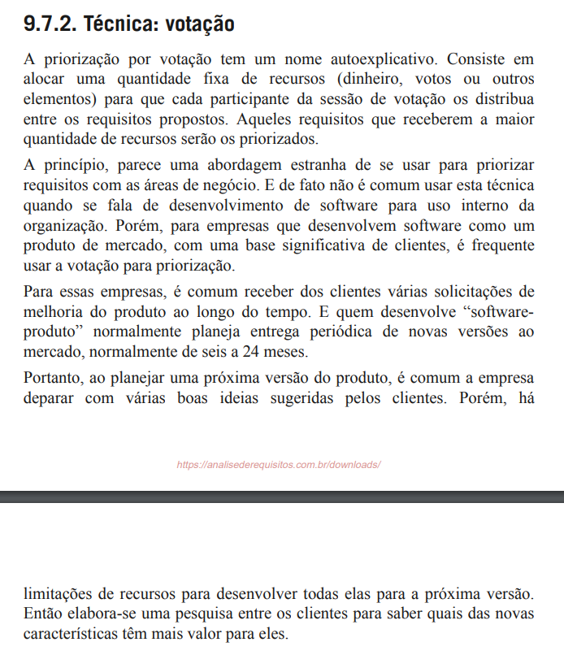

Votação
1. Introdução
2. Metodologia
2.1. Cronograma
Tabela 1: Participantes da Votação
| Nome | Data | Hora | Função |
|---|---|---|---|
| Caio Duarte | 02/05/2025 | 22:30 | Desenvolvedor |
| Clístenes Mendonça | 02/05/2025 | 22:30 | Cliente (pesquisador) |
| Gabriel Pinto | 02/05/2025 | 22:30 | Lúcia (persona) |
| João Félix | 02/05/2025 | 22:30 | Marcos (persona) |
| Laryssa Felix | 02/05/2025 | 22:30 | Roberto (persona) |
| Leonardo Gomes | 02/05/2025 | 22:30 | Cliente (pesquisador) |
| Ludmila Nunes | 02/05/2025 | 22:30 | Desenvolvedor |
| Mayara Marques | 02/05/2025 | 22:30 | Desenvolvedor |
Fonte: Ludmila Nunes, 2025.
2.2. Aplicação da técnica
2.2.1. Justificativa do uso de personas
Personas são arquétipos, personagens ficcionais, concebidos a partir da síntese de comportamentos observados entre consumidores com perfis extremos [...]. Podem ser utilizadas em várias fases do processo, [...] mas são especialmente úteis na geração e validação de ideias. [...] Elas auxiliam no processo de design porque direcionam as soluções para o sentido dos usuários, orientando o olhar sob as informações e, assim, apoiando as tomadas de decisão (BROWN, T., 2010).
- Identificar quais funcionalidades são mais relevantes para cada perfil de usuário.
- Avaliar o impacto de cada requisito na experiência do usuário final.
- Tornar o processo de priorização mais alinhado às necessidades reais dos usuários, e não apenas baseado em suposições técnicas.
3. Resultado da priorização
3.1. Requisitos mais votados
Tabela 2: Requisitos Prioritários
| ID | Descrição | Implementado | Votos recebidos |
|---|---|---|---|
| RF01 | O sistema deve possuir notícias atualizadas sobre dados demográficos/socioeconômicos do Brasil, de seus estados e municípios. | Sim | 6 |
| RF22 | Na aba “síntese”, dados como gentílico, área territorial, população, renda, orçamento, IDH, matrículas, salário médio, PIB per capita e mortalidade infantil devem estar disponíveis por estado e município. | Sim | 6 |
| RNF04 | O sistema deve garantir que usuários com baixo letramento estatístico consigam utilizar a interface. | Não | 5 |
| RNF01 | O sistema deve estar disponível de forma estável, sem travamentos ou quedas frequentes. | Sim | 5 |
| RF23 | Filtros por país, estado e município devem estar disponíveis na aba “síntese”. | Sim | 4 |
| RF50 | Possibilidade de realizar o próximo censo pelo aplicativo | Não | 4 |
| RNF03 | O sistema deve ser compatível com ferramentas de acessibilidade (áudio, Libras). | Parcialmente | 4 |
| RF03 | Se houver algum dado/indicador atrelado à notícia lida, esse indicador deve estar presente no topo da página da notícia. | Sim | 3 |
| RF05 | O aplicativo deve possuir uma navbar inferior que permita que o usuário navegue pelas diversas funcionalidades principais da aplicação. | Sim | 3 |
| RF07 | Ao clicar no dado, deve aparecer gráfico mais completo com evolução temporal do indicador. | Sim | 3 |
| RF09 | Ao lado do nome do indicador, deve aparecer a definição daquele indicador. | Sim | 3 |
| RF21 | O calendário deve permitir visualização de meses passados e futuros em relação ao mês atual. | Sim | 3 |
| RF28 | O usuário pode favoritar indicadores e visualizar as últimas atualizações. | Não | 3 |
| RF29 | Comparativo de indicadores por região. | Não | 3 |
| RF34 | Mapas interativos, com visualização de dados geográficos e demográficos. | Não | 3 |
| RF40 | O sistema deve apresentar mais dados na seção síntese para os respectivos locais (estado, município), como IDH, total de veículos, governante, entre outros, semelhante ao site de referência. | Não | 3 |
| RF43 | O sistema deve permitir a comparação dos censos realizados em diferentes anos. | Não | 3 |
| RF47 | O sistema deve indicar políticas públicas com base na análise dos dados adquiridos. | Não | 3 |
| RF53 | Opção de alterar o tamanho da fonte (com botão). | Não | 3 |
| RF55 | O sistema deve permitir busca refinada por dados e publicações. | Não | 3 |
| RF57 | O sistema deve integrar-se com a conta Gov.br. | Não | 3 |
| RF61 | O sistema deve apresentar os dados do Censo de forma visual e interativa (ex: infográficos, gráficos). | Não | 3 |
| RNF02 | O sistema deve permitir uso fluido tanto em computadores quanto em dispositivos móveis. | Sim | 3 |
| RF06 | Sistema deve possuir a aba de indicadores, com principais dados do IBGE, prévia de gráfico e valor com coloração simbólica (verde/vermelha). | Sim | 2 |
| RF25 | Modo offline para uso do aplicativo sem conexão com a internet. | Não | 2 |
| RF30 | Possibilidade de responder a questionários relacionados ao censo diretamente pelo app. | Não | 2 |
| RF35 | Possibilidade de filtro por tipo de dado. | Não | 2 |
| RF36 | Possibilidade de exportar gráficos e resumos em formatos como PDF. | Não | 2 |
| RF37 | Computar informações de dados e gerar relatórios para exportação. | Não | 2 |
| RF39 | O sistema deve filtrar notícias por região e/ou tempo. | Não | 2 |
| RF54 | Opção de alto contraste do aplicativo (com botão). | Não | 2 |
| RF58 | O sistema deve permitir o compartilhamento de gráficos com link da fonte. | Não | 2 |
| RF59 | O sistema deve permitir a consulta a dados demográficos e indicadores por nível territorial detalhado. | Sim | 2 |
| RF60 | O sistema deve possuir uma FAQ com respostas às dúvidas mais comuns. | Não | 2 |
| RF02 | Sistema deve possuir uma funcionalidade de busca, que independe da tela em que o usuário se encontra. | Sim | 1 |
| RF04 | A notícia deve estar na aba de notícias do aplicativo. | Sim | 1 |
| RF10 | Uma aba de calendário deve estar presente, com eventos/pesquisas principais do IBGE. | Sim | 1 |
| RF11 | Cada dado da aba de síntese deve possuir uma fonte atrelada. | Sim | 1 |
| RF13 | O sistema deve oferecer opção de controle de notificações (ativar ou desativar). | Sim | 1 |
| RF16 | Deve haver uma opção de compartilhar o aplicativo. | Sim | 1 |
| RF18 | As redes sociais do IBGE devem ser linkadas. | Sim | 1 |
| RF20 | No calendário, os dias com evento/pesquisa devem ter cor diferente dos demais. | Sim | 1 |
| RF27 | Notificações para notícias relevantes e atualizações dos indicadores favoritos. | Não | 1 |
| RF31 | Possibilidade de realizar e preencher questionários diretamente no aplicativo. | Não | 1 |
| RF33 | Acesso a dados de diferentes fontes como o IBGE, através do app. | Não | 1 |
| RF45 | O sistema deve realizar estudos preditivos com base nos dados atuais. | Não | 1 |
| RF51 | Opção de modo noturno. | Não | 1 |
| RF52 | Opção de mudança de idiomas (Português, Inglês, Espanhol). | Não | 1 |
| RF56 | O sistema deve disponibilizar explicações simplificadas sobre os termos técnicos. | Não | 1 |
| RF63 | O sistema deve integrar todos ou a maioria dos aplicativos utilizados na coleta de dados de pesquisas. | Não | 1 |
Fonte: Ludmila Nunes, 2025.
3.2. Requisitos não priorizados
Tabela 3: Requisitos não priorizados
| ID | Descrição | Implementado | Votos recebidos |
|---|---|---|---|
| RF08 | Notícias relacionadas ao dado devem aparecer na tela do dado. | Sim | 0 |
| RF12 | Uma aba de extras deve existir. | Sim | 0 |
| RF14 | O sistema deve notificar o usuário sobre novas notícias. | Sim | 0 |
| RF15 | Deve haver uma opção de avaliação do aplicativo com coleta de perfil, satisfação, funcionalidades mais usadas e sugestões. | Sim | 0 |
| RF17 | Uma opção de suporte deve existir, com ligação ao site do IBGE. | Sim | 0 |
| RF19 | As notícias devem ser compartilháveis. | Sim | 0 |
| RF24 | Jogos educativos sobre geografia, demografia e temas sociais. | Não | 0 |
| RF26 | Central de Ajuda dentro do app, com informações sobre o uso do aplicativo. | Não | 0 |
| RF32 | Integração com outras fontes como sites ou APIs externas (ex: dados de transporte público). | Não | 0 |
| RF38 | O sistema deve apresentar os indicadores sociais e agropecuários. | Não | 0 |
| RF41 | O sistema deve exibir conteúdos produzidos para outras plataformas, como YouTube, TikTok e Instagram, em uma aba dedicada. | Não | 0 |
| RF42 | O sistema deve analisar os conteúdos acessados pelo usuário para recomendar conteúdos similares. | Não | 0 |
| RF44 | O sistema deve exibir uma confirmação sobre a identidade do recenseador. | Não | 0 |
| RF46 | O sistema deve informar quais fatores influenciam o aumento ou a diminuição de determinado indicador. | Não | 0 |
| RF48 | O sistema deve comparar os locais com maior e menor taxa de resposta ao censo. | Não | 0 |
| RF49 | Compartilhamento de métricas do aplicativo com a fonte atrelada ao IBGE | Não | 0 |
| RF62 | O sistema deve permitir acesso às publicações completas de cada pesquisa com a metodologia detalhada. | Não | 0 |
Fonte: Ludmila Nunes, 2025.
4. Considerações finais
5. Gravação da priorização
6. Bibliografia
VAZQUEZ, Carlos; SIMÕES, Guilherme. Engenharia de Requisitos: Software Orientado ao Negócio. Rio de Janeiro: Brasport, 2016. p. 392–393.
Figura 1: Referência da votação

Fonte: VAZQUEZ et al., 2016.
BROWN, Tim. Design thinking: uma metodologia poderosa para decretar o fim das velhas ideias. Tradução de André Czarnobai. Rio de Janeiro: Alta Books, 2010. p. 80.
Figura 2: Referência de persona

Fonte: BROWN, T., 2010.
Histórico de Versões
Tabela 4: Histórico de versões
| Versão | Descrição | Autor | Data | Revisor |
|---|---|---|---|---|
| 1.0 | Criação da documento | Laryssa Felix | 03/05/2025 | Letícia Monteiro |
| 2.0 | Criação e estruturação do relatório da priorização | Ludmila Nunes | 04/05/2025 | João Félix |
| 2.0.1 | Correção da rota para página de personas | Ludmila Nunes | 04/05/2025 | Mayara Marques |
| 2.0.2 | Correção do título das tabelas | Ludmila Nunes | 04/05/2025 | Mayara Marques |
| 2.1 | Padronização da tabela do cronograma | Mayara Marques | 06/05/2025 | Larysssa Felix |
| 2.2 | Adição da coluna de implementado | Laryssa Felix | 10/05/2025 | Letícia Monteiro |
| 2.3 | Adição da justificativa do uso de personas | Ludmila Nunes | 13/05/2025 | Caio Duarte |
Fonte: Caio Duarte, Gabriel Pinto, João Félix, Laryssa Felix, Letícia Monteiro, Ludmila Nunes e Mayara Marques, 2025.